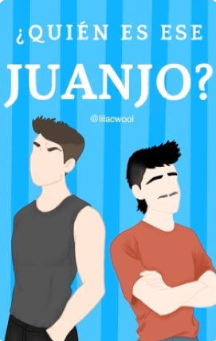
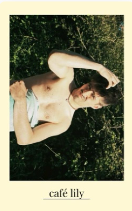

un amor en competencia
En la vibrante Zaragoza, Juanjo, estrella del Real Zaragoza, y Martin, un carismático cantante en ascenso, se encuentran en lados opuestos de la fama. Su rivalidad inicial se desvanece cuando una conexión inesperada florece entre ellos en medio de las presiones de sus respectivas carreras. A medida que luchan por encontrar un equilibrio entre la fama y la autenticidad, Juanjo y Martin descubren un amor que desafía las expectativas y los lleva a un viaje de autodescubrimiento y crecimiento.

¿Quién es ese Juanjo?
Escapar. Salir corriendo. Huir. Martin nunca habría usado esas palabras para definir su Erasmus. Había sido planeado con meses de antelación, no se puede llamar huida a un viaje planificado con tanto tiempo, ¿verdad?
Podía responder con la verdad o seguir metiendo la cabeza bajo tierra como una avestruz. Por muy planeado que ese Erasmus estuviera, nadie podía ocultar que había sido una excusa perfecta para dejar atrás el infierno en el que Madrid se había convertido en los últimos meses que pasó allí. [...]
Oasis
donde juanjo, un cantante muy popular en la industria musical, se ve involucrado en un escándalo mediático que amenaza con destruir su carrera. Buscando huir de los focos, acaba refugiándose en un pueblo perdido a orillas del mar.
o
donde martin, un artista apasionado que vive una vida sencilla, alejado desde hace años de la vida en la ciudad, le alquila una habitación en su casa durante los meses de verano.
o
donde ambos pasan el verano de sus vidas.

café lily
Juanjo se instala un verano en un pueblo costero para trabajar en la cafetería de su tía.
Martin está enfadado porque el sobrino de su jefa le ha provocado una bajada de sueldo.
O donde Juanjo y Martin se conocen entre cafés, arena, amigas y olas.